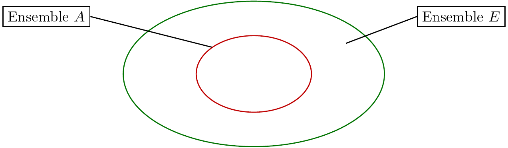

Chapitre 7 : Information chiffrée
Seconde · Chapitre 7 — Information chiffrée · cours de Frederik de Peyrelongue
I. Proportions
Soit un ensemble $A$ ayant $n_{A}$ éléments, inclus dans un ensemble plus grand $E$ ayant $n_{E}$ éléments.

1.1 Calculer une proportion $p$ d'un ensemble $A$ inclus dans un ensemble $E$
Pour calculer la proportion d'éléments de $A$ compris dans l'ensemble $E$, on calcule le rapport du nombre d'éléments :
Pour exprimer la proportion en pourcentage, on écrit la fraction avec $100$ au dénominateur.
Exemple : si $p=\dfrac{n_{A}}{n_{E}}=0{,}37=\dfrac{37}{100}=37\,\%$.
Il y a $15$ gauchers dans un groupe de $90$ joueurs de tennis. Quelle est la proportion de gauchers dans le groupe ?
1.2 Calculer un pourcentage d'une quantité
Exemple : $38\,\%$ de $40$ est égal à $R=\dfrac{38}{100}\times 40$.
Calculer $p\,\%$ de $N$, c'est calculer $\dfrac{p}{100}\times N$.
Il y a $45\,\%$ de filles dans un club d'escrime de $300$ membres. Combien y a-t-il de filles dans le club ?
1.3 Savoir retrouver $n_{E}$ à partir de $p$ et de $n_{A}$
$24$ élèves sont malades, ce qui représente dans l'établissement $5\,\%$ de l'effectif. Combien y a-t-il d'élèves ?
| $5\,\%$ | $\longrightarrow$ | $24$ élèves |
| $100\,\%$ | $\longrightarrow$ | $X$ élèves |
Produit en croix :
Autre méthode : $n_{A}=24$, $n_{E}$ est inconnu et $p=5\,\%=\dfrac{5}{100}=0{,}05$.
On a, par définition, $p=\dfrac{n_{A}}{n_{E}}$, soit :
1.4 Proportions enchaînées
Soient $A$, $B$ et $E$ trois ensembles tels que $B\subset A\subset E$. Si $p_{1}$ est la proportion de $B$ dans $A$ et si $p_{2}$ est la proportion de $A$ dans $E$, alors la proportion de $B$ dans $E$ est $p_{1}\times p_{2}$.
Preuve : on a $p_{1}=\dfrac{n_{B}}{n_{A}}$ et $p_{2}=\dfrac{n_{A}}{n_{E}}$, d'où
c'est la proportion de $B$ dans $E$.
$13\,\%$ des élèves sont des garçons et $20\,\%$ des garçons font du sport. La proportion des garçons qui font du sport parmi tous les élèves est de :
II. Évolutions
2.1 Taux d'évolution
On appelle taux d'évolution (ou taux de variation) le pourcentage de variation entre deux valeurs, l'une de départ et l'autre d'arrivée.
La variation $t$ en pourcentage entre $V_{d}$, valeur de départ, et $V_{a}$, valeur d'arrivée, est
Après un an d'entraînement, un joueur de rugby est passé de $80$ kg à $100$ kg. Quel est le taux de variation de sa masse ?
2.2 Le coefficient multiplicateur
Le coefficient multiplicateur $C_{M}$ est le rapport de la valeur d'arrivée $V_{a}$ sur la valeur de départ $V_{d}$ :
2.3 Le coefficient multiplicateur et le taux $t$
Preuve :

Exemple :
- pour une augmentation de $12\,\%$, le taux $t=12\,\%$ et le coefficient multiplicateur $C_{M}=1{,}12$ ;
- pour une baisse de $12\,\%$, le taux $t=-12\,\%$ et le coefficient multiplicateur $C_{M}=0{,}88$.
- Pour trouver $V_{a}$, on multiplie $V_{d}$ par $(1+t)$ : $V_{a}=(1+t)\times V_{d}$.
- Pour trouver $V_{d}$, on multiplie $V_{a}$ par $\dfrac{1}{1+t}$ : $V_{a}\times\dfrac{1}{1+t}=V_{d}$.
Pour trouver le taux d'évolution :
- Méthode 1 : $t=\dfrac{V_{a}-V_{d}}{V_{d}}$ ;
- Méthode 2 : on calcule le coefficient multiplicateur $C_{M}=\dfrac{V_{a}}{V_{d}}$, puis $t=C_{M}-1$.
2.4 Taux global correspondant à plusieurs évolutions successives

Il faut multiplier les coefficients multiplicateurs entre eux :
\[ C_{M\text{global}}=C_{M_{1}}\times C_{M_{2}}\times\dots\times C_{M_{n}} \]\[ \left(1+t_{g}\right)=\left(1+t_{1}\right)\times\dots\times \left(1+t_{n}\right) \qquad\text{donc}\qquad t_{g}=\left(1+t_{1}\right)\times\dots\times\left(1+t_{n}\right)-1 . \]
Calculer le taux global d'une hausse de $20\,\%$ suivie d'une hausse de $20\,\%$ :
2.5 Calculer un taux moyen correspondant à $n$ évolutions successives, connaissant le taux global

On écrit :
Pour une hausse annuelle de $15\,\%$, on cherche le taux moyen mensuel appliqué :
Le taux moyen mensuel est de $1{,}17\,\%$ par mois.
2.6 Taux d'évolution réciproque
On cherche à obtenir le taux d'évolution $t_{r}$ qui annule une évolution $t_{x}$.
Une évolution d'un taux $t_{x}$ revient à multiplier par $(1+t_{x})$ : pour revenir en arrière, il faut diviser par $(1+t_{x})$ :
Soit une évolution de $+20\,\%$. Il faudra effectuer une évolution de
pour annuler la hausse de $20\,\%$.
III. Indices
Un indice est la valeur d'une grandeur par rapport à une grandeur de référence.
Les indices permettent de mesurer l'évolution d'une grandeur relativement à une grandeur de départ (la base). Cela revient à imaginer que la base de l'indice vaut « $100$ » et que les autres grandeurs sont calculées relativement à cette grandeur de référence.
On considère la série suivante, où $2007$ est prise comme année de référence.
| Année | $2006$ | $2007$ | $2008$ | $2009$ |
| Valeur | $32$ | $40$ | $36$ | $46$ |
| Indice | $80$ | $100$ | $90$ | $115$ |
On donne $100$ comme valeur à l'année de référence, et on rapporte toutes les autres valeurs proportionnellement : par exemple, $\dfrac{32}{40}\times 100=80$ et $\dfrac{46}{40}\times 100=115$.
- Un indice de $115$ indique une hausse de $15\,\%$ par rapport à l'année de référence $2007$.
- Un indice de $90$ indique une baisse de $10\,\%$ par rapport à l'année de référence ($2007$).
ATTENTION : entre $2008$ et $2009$, il n'y a pas une augmentation de $115-90=25\,\%$, mais de $27{,}8\,\%$.
En effet, le taux d'évolution est
De même, entre $2006$ et $2007$, il n'y a pas une augmentation de $100-80=20\,\%$, mais de $25\,\%$ :
La base indicielle sert à mesurer les variations par rapport à l'année de référence !